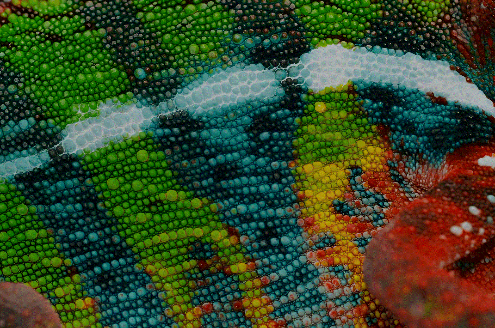
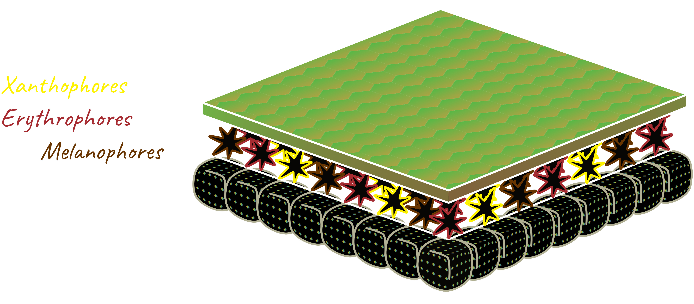
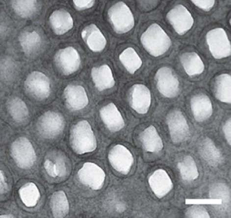
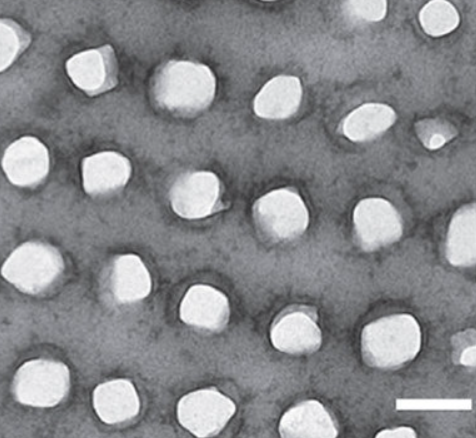

.png)


A type of cell that displays color.
Chameleon skin is composed of four distinct layers: The epidermis, the chromatophore layer, the S-iridophore layer, and the D-iridophore layer.
The first crucial component of the chameleon’s color-changing ability is the chromatophore layer. This layer contains xanthophores, erythrophores, and melanophores: Three kinds of chromatophores that disperse red pigment, yellow pigment, and melanin, respectively. These pigment-producing cells are star-shaped, with long ‘arms’ called dendrites that extend towards the skin’s surface. Chages in muscle tension signal these chromatophores to disperse pigment across their dendrites, producing color visible through the translucent epidermis. When a chameleon's muscles are relaxed, the pigment aggregates at the center of the cell, hidden deep under the skin and out of sight.

𓆈 𓆈 𓆈
For a long time, the chromatophore layer was considered the primary mechanism providing chameleons with color-changing capabilities. However, pigment dispersing chromatophores couldn't be the only mechanism affecting the chameleon’s hue. The chameleon’s ‘default’ green color isn’t possible to produce with only red and yellow pigments. Further research in collaboration with physicists discovered another key component of chameleon skin explaining how they change colors: a layer of iridophores, a type of chromatophore with the ability to reflect different wavelengths of light.
Each iridophore cell contains hundreds of crystals made of the protein guanine, each around only 200 nanometers in size. These nanocrystals are fine enough to interfere with visible lightwaves and reflect color, a phenomenon called structural coloration. Like the pigment chromatophores, iridophores also change in response to changing muscle tension by expanding or contracting. When the iridophores change in size, the arrangement of their nanocrystals are broadened, spacing them further apart and allowing the crystals to reflect longer wavelengths of light. When a chameleon is flushed, the crystals will spread farther apart, resulting in a yellow or red color. When a chameleon is relaxed, the crystals move closer together, resulting in a blue color that ‘blends’ with the yellow pigment from the chromatophores above it, making the chameleon appear green.

A tight-knit arrangement of guanine crystals captured from a calm chameleon. In this arragement, the crystals reflect short wavelengths of light such as blue.

A broader arragement of guanine crystals captured from an excited chameleon. In this arrangement, the crystals reflect longer wavelengths of light such as yellow.